1.为什么使用索引
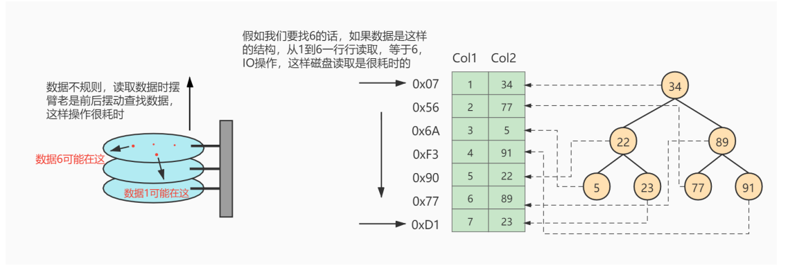
假如给数据使用 二叉树 这样的数据结构进行存储，如下图所示
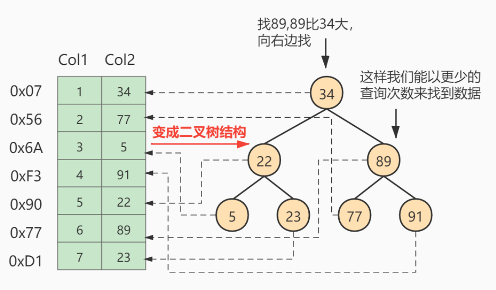
2. 索引及其优缺点
2.1 索引概述
MySQL官方对索引的定义为：索引（Index）是帮助MySQL高效获取数据的数据结构。
索引的本质：索引是数据结构。你可以简单理解为“排好序的快速查找数据结构”，满足特定查找算法。 这些数据结构以某种方式指向数据， 这样就可以在这些数据结构的基础上实现 高级查找算法 。
2.2 优点
（1）类似大学图书馆建书目索引，提高数据检索的效率，降低 数据库的IO成本 ，这也是创建索引最主 要的原因。
（2）通过创建唯一索引，可以保证数据库表中每一行 数据的唯一性 。
（3）在实现数据的 参考完整性方面，可以 加速表和表之间的连接 。换句话说，对于有依赖关系的子表和父表联合查询时， 可以提高查询速度。
（4）在使用分组和排序子句进行数据查询时，可以显著 减少查询中分组和排序的时 间 ，降低了CPU的消耗。
2.3 缺点
增加索引也有许多不利的方面，主要表现在如下几个方面：
（1）创建索引和维护索引要 耗费时间 ，并 且随着数据量的增加，所耗费的时间也会增加。
（2）索引需要占 磁盘空间 ，除了数据表占数据空间之 外，每一个索引还要占一定的物理空间， 存储在磁盘上 ，如果有大量的索引，索引文件就可能比数据文件更快达到最大文件尺寸。
（3）虽然索引大大提高了查询速度，同时却会 降低更新表的速度 。当对表 中的数据进行增加、删除和修改的时候，索引也要动态地维护，这样就降低了数据的维护速度。
因此，选择使用索引时，需要综合考虑索引的优点和缺点。
3. InnoDB中索引的推演
3.1 索引之前的查找
先来看一个精确匹配的例子：
SELECT [列名列表] FROM 表名 WHERE 列名 = xxx;
1. 在一个页中的查找
2. 在很多页中查找
在没有索引的情况下，不论是根据主键列或者其他列的值进行查找，由于我们并不能快速的定位到记录 所在的页，所以只能 从第一个页 沿着 双向链表 一直往下找，在每一个页中根据我们上面的查找方式去查找指定的记录。因为要遍历所有的数据页，所以这种方式显然是 超级耗时 的。如果一个表有一亿条记录呢？此时 索引 应运而生。
3.2 设计索引
建一个表：
mysql> CREATE TABLE index_demo(
c1 INT,
c2 INT,
c3 CHAR(1),
PRIMARY KEY(c1)
) ROW_FORMAT = Compact;
这个新建的 index_demo 表中有2个INT类型的列，1个CHAR(1)类型的列，而且我们规定了c1列为主键， 这个表使用 Compact 行格式来实际存储记录的。这里我们简化了index_demo表的行格式示意图：
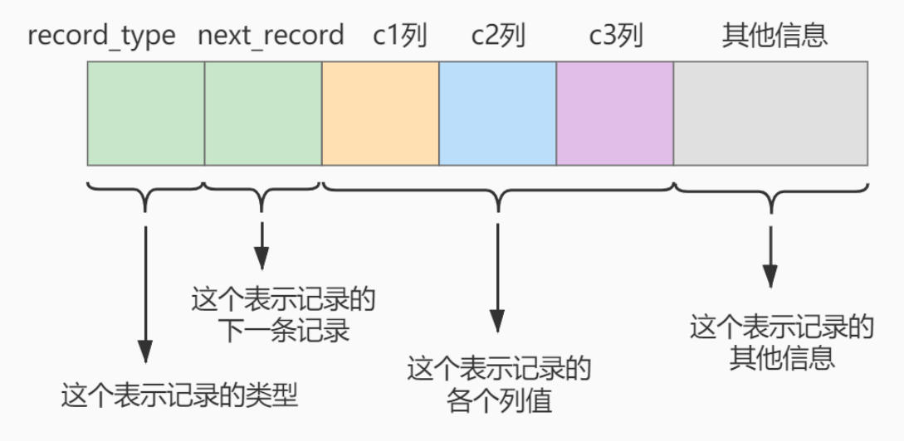
我们只在示意图里展示记录的这几个部分：
record_type：记录头信息的一项属性，表示记录的类型， 0 表示普通记录、 2 表示最小记录、 3 表示最大记录、 1 暂时还没用过，下面讲。next_record：记录头信息的一项属性，表示下一条地址相对于本条记录的地址偏移量，我们用 箭头来表明下一条记录是谁。各个列的值：这里只记录在 index_demo 表中的三个列，分别是 c1 、 c2 和 c3 。其他信息：除了上述3种信息以外的所有信息，包括其他隐藏列的值以及记录的额外信息。
将记录格式示意图的其他信息项暂时去掉并把它竖起来的效果就是这样：
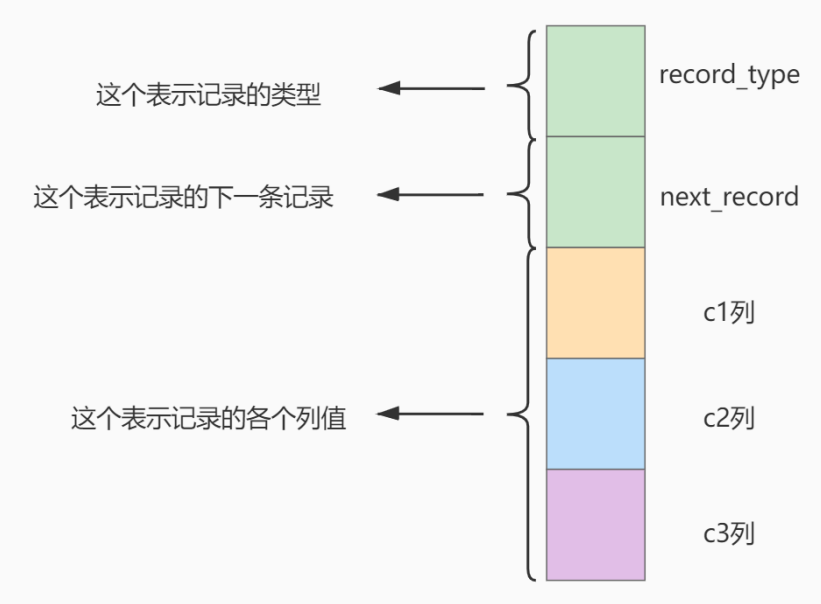
把一些记录放到页里的示意图就是：
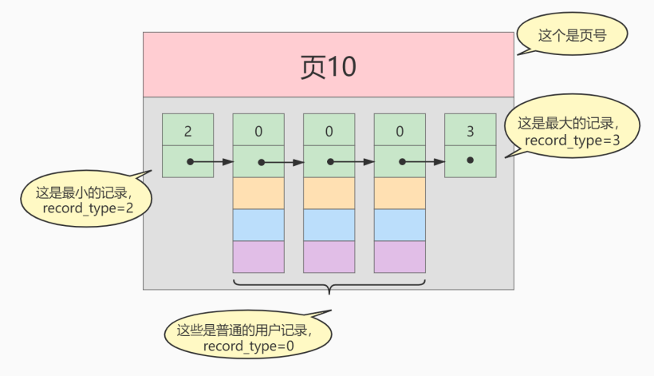
1. 一个简单的索引设计方案
我们在根据某个搜索条件查找一些记录时为什么要遍历所有的数据页呢？
因为各个页中的记录并没有规律，我们并不知道我们的搜索条件匹配哪些页中的记录，所以不得不依次遍历所有的数据页。
如果 我们想快速的定位到需要查找的记录在哪些数据页 中该咋办？
我们可以为快速定位记录所在的数据页而 建立一个目录 ，建这个目录必须完成下边这些事：
- 下一个数据页中用户记录的主键值必须大于上一个页中用户记录的主键值
- 给所有的页建立一个目录项
所以我们为上边几个页做好的目录就像这样子：
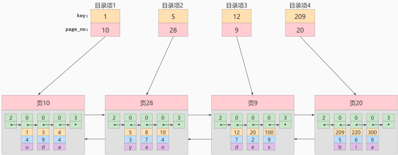
以 页28 为例，它对应 目录项2 ，这个目录项中包含着该页的页号 28 以及该页中用户记录的最小主键值 5 。我们只需要把几个目录项在物理存储器上连续存储（比如：数组），就可以实现根据主键 值快速查找某条记录的功能了。比如：查找主键值为 20 的记录，具体查找过程分两步：
1
2
1. 先从目录项中根据 二分法 快速确定出主键值为 `20 `的记录在 目录项3 中（因为 12 < 20 < 209 ），它对应的页是 页9 。
2. 再根据前边说的在页中查找记录的方式去 页9 中定位具体的记录。 至此，针对数据页做的简易目录就搞定了。这个目录有一个别名，称为 索引 。
2. InnoDB中的索引方案
① 迭代1次：目录项纪录的页
我们把前边使用到的目录项放到数据页中的样子就是这样：
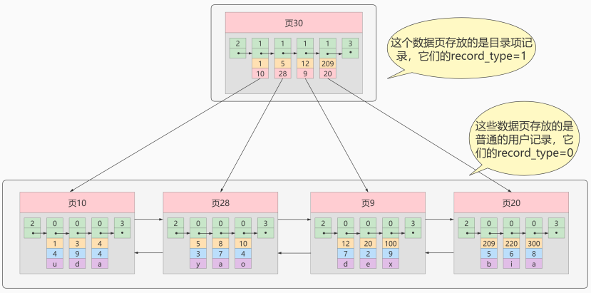
从图中可以看出来，我们新分配了一个编号为30的页来专门存储目录项记录。这里再次强调 目录项记录 和普通的 用户记录 的不同点：
- 目录项记录 的 record_type 值是1，而 普通用户记录 的 record_type 值是0。
- 目录项记录只有
主键值和页的编号两个列，而普通的用户记录的列是用户自己定义的，可能包含很 多列 ，另外还有InnoDB自己添加的隐藏列。 - 了解：记录头信息里还有一个叫
min_rec_mask的属性，只有在存储 目录项记录 的页中的主键值最小的 目录项记录 的 min_rec_mask 值为 1 ，其他别的记录的 min_rec_mask 值都是 0 。
相同点：两者用的是一样的数据页，都会为主键值生成 Page Directory （页目录），从而在按照主键值进行查找时可以使用 二分法 来加快查询速度。 现在以查找主键为 20 的记录为例，根据某个主键值去查找记录的步骤就可以大致拆分成下边两步：
- 先到存储 目录项记录 的页，也就是页30中通过 二分法 快速定位到对应目录项，因为 12 < 20 < 209 ，所以定位到对应的记录所在的页就是页9。
- 再到存储用户记录的页9中根据 二分法 快速定位到主键值为 20 的用户记录。
② 迭代2次：多个目录项纪录的页
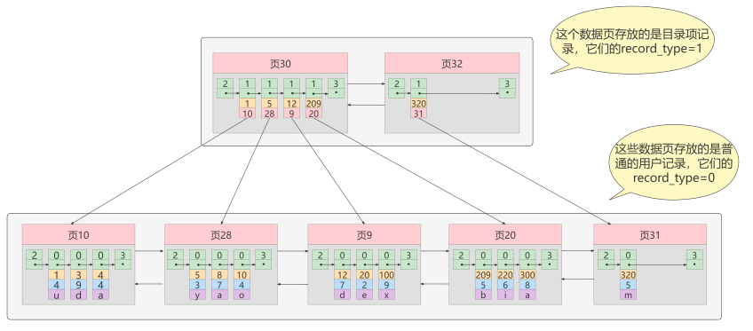
从图中可以看出，我们插入了一条主键值为320的用户记录之后需要两个新的数据页：
- 为存储该用户记录而新生成了 页31 。
- 因为原先存储目录项记录的
页30的容量已满 （我们前边假设只能存储4条目录项记录），所以不得 不需要一个新的页32来存放页31对应的目录项。
现在因为存储目录项记录的页不止一个，所以如果我们想根据主键值查找一条用户记录大致需要3个步 骤，以查找主键值为 20 的记录为例：
1.确定 目录项记录页 我们现在的存储目录项记录的页有两个，即 页30 和 页32 ，又因为页30表示的目录项的主键值的 范围是 [1, 320) ，页32表示的目录项的主键值不小于 320 ，所以主键值为 20 的记录对应的目 录项记录在 页30 中。
2.通过目录项记录页 确定用户记录真实所在的页 。 在一个存储 目录项记录 的页中通过主键值定位一条目录项记录的方式说过了。
3.在真实存储用户记录的页中定位到具体的记录
③ 迭代3次：目录项记录页的目录页

如图，我们生成了一个存储更高级目录项的 页33 ，这个页中的两条记录分别代表页30和页32，如果用 户记录的主键值在 [1, 320) 之间，则到页30中查找更详细的目录项记录，如果主键值 不小于320 的 话，就到页32中查找更详细的目录项记录。
我们可以用下边这个图来描述它：
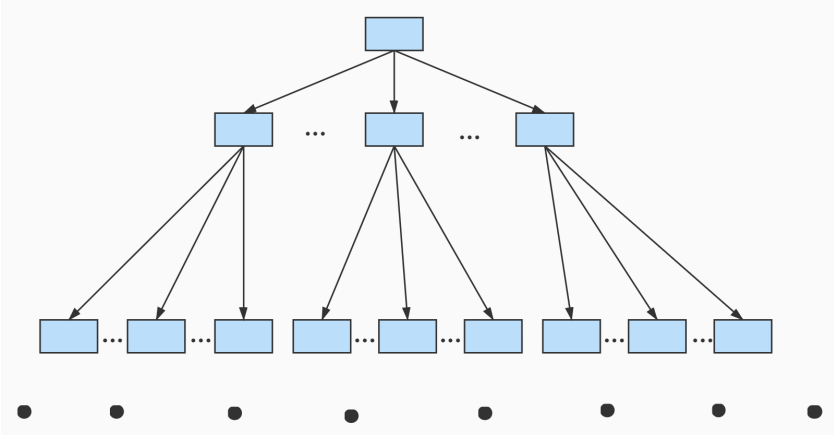
这个数据结构，它的名称是 B+树 。
④ B+Tree
一个B+树的节点其实可以分成好多层，规定最下边的那层，也就是存放我们用户记录的那层为第 0层， 之后依次往上加。之前我们做了一个非常极端的假设：存放用户记录的页 最多存放3条记录 ，存放目录项 记录的页 最多存放4条记录 。其实真实环境中一个页存放的记录数量是非常大的，假设所有存放用户记录 的叶子节点代表的数据页可以存放 100条用户记录 ，所有存放目录项记录的内节点代表的数据页可以存 放 1000条目录项记录 ，那么：
- 如果B+树只有1层，也就是只有1个用于存放用户记录的节点，最多能存放
100条记录 - 如果B+树有2层，最多能存放 1000×100=10,0000 条记录。
- 如果B+树有3层，最多能存放 1000×1000×100=1,0000,0000 条记录。
- 如果B+树有4层，最多能存放 1000×1000×1000×100=1000,0000,0000 条记录。相当多的记录！！！
你的表里能存放 100000000000条记录吗？所以一般情况下，我们用到的B+树都不会超过4层 ，那我们通过主键值去查找某条记录最多只需要做4个页面内的查找（查找3个目录项页和一个用户记录页），又 因为在每个页面内有所谓的 Page Directory （页目录），所以在页面内也可以通过 二分法 实现快速 定位记录。
3.3 常见索引概念
索引按照物理实现方式，索引可以分为 2 种：聚簇（聚集）和非聚簇（非聚集）索引。我们也把非聚集 索引称为二级索引或者辅助索引。
1. 聚簇索引
特点：
1.使用记录主键值的大小进行记录和页的排序，这包括三个方面的含义：
页内的记录是按照主键的大小顺序排成一个单向链表。- 各个存放
用户记录的页也是根据页中用户记录的主键大小顺序排成一个双向链表。 - 存放
目录项记录的页分为不同的层次，在同一层次中的页也是根据页中目录项记录的主键 大小顺序排成一个 双向链表 。
2.B+树的 叶子节点 存储的是完整的用户记录。 所谓完整的用户记录，就是指这个记录中存储了所有列的值（包括隐藏列）。
优点：
数据访问更快，因为聚簇索引将索引和数据保存在同一个B+树中，因此从聚簇索引中获取数据比非聚簇索引更快- 聚簇索引对于主键的
排序查找和范围查找速度非常快 按照聚簇索引排列顺序，查询显示一定范围数据的时候，由于数据都是紧密相连，数据库不用从多 个数据块中提取数据，所以 节省了大量的io操作 。
缺点：
插入速度严重依赖于插入顺序，按照主键的顺序插入是最快的方式，否则将会出现页分裂，严重影响性能。因此，对于InnoDB表，我们一般都会定义一个自增的ID列为主键更新主键的代价很高，因为将会导致被更新的行移动。因此，对于InnoDB表，我们一般定义主键为 不可更新二级索引访问需要两次索引查找，第一次找到主键值，第二次根据主键值找到行数据
2. 二级索引（辅助索引、非聚簇索引）
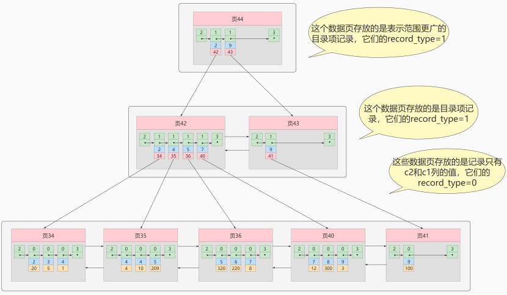
概念：回表 我们根据这个以c2列大小排序的B+树只能确定我们要查找记录的主键值，所以如果我们想根 据c2列的值查找到完整的用户记录的话，仍然需要到 聚簇索引 中再查一遍，这个过程称为 回表 。也就 是根据c2列的值查询一条完整的用户记录需要使用到 2 棵B+树！
问题：为什么我们还需要一次 回表 操作呢？直接把完整的用户记录放到叶子节点不OK吗？
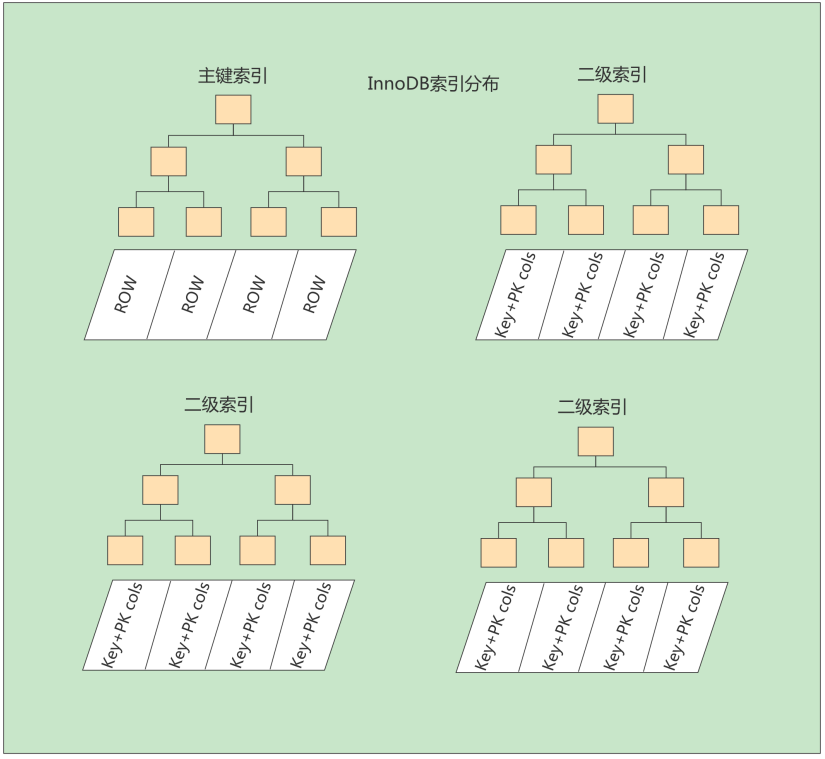
3. 联合索引
我们也可以同时以多个列的大小作为排序规则，也就是同时为多个列建立索引，比方说我们想让B+树按照 c2和c3列 的大小进行排序，这个包含两层含义：
- 先把各个记录和页按照c2列进行排序。
- 在记录的c2列相同的情况下，采用c3列进行排序
注意一点，以c2和c3列的大小为排序规则建立的B+树称为 联合索引 ，本质上也是一个二级索引。它的意 思与分别为c2和c3列分别建立索引的表述是不同的，不同点如下：
- 建立
联合索引只会建立如上图一样的1棵B+树。 - 为c2和c3列分别建立索引会分别以c2和c3列的大小为排序规则建立2棵B+树。
3.4 InnoDB的B+树索引的注意事项
1. 根页面位置万年不动
2. 内节点中目录项记录的唯一性
3. 一个页面最少存储2条记录
4. MyISAM中的索引方案
B树索引适用存储引擎如表所示：
| 索引 / 存储引擎 | MyISAM | InnoDB | Memory |
|---|---|---|---|
| B-Tree索引 | 支持 | 支持 | 支持 |
即使多个存储引擎支持同一种类型的索引，但是他们的实现原理也是不同的。Innodb和MyISAM默认的索 引是Btree索引；而Memory默认的索引是Hash索引。
MyISAM引擎使用 B+Tree 作为索引结构，叶子节点的data域存放的是 数据记录的地址 。
4.1 MyISAM索引的原理
下图是MyISAM索引的原理图。
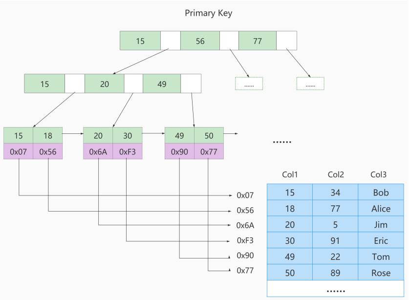
如果我们在Col2上建立一个二级索引，则此索引的结构如下图所示：
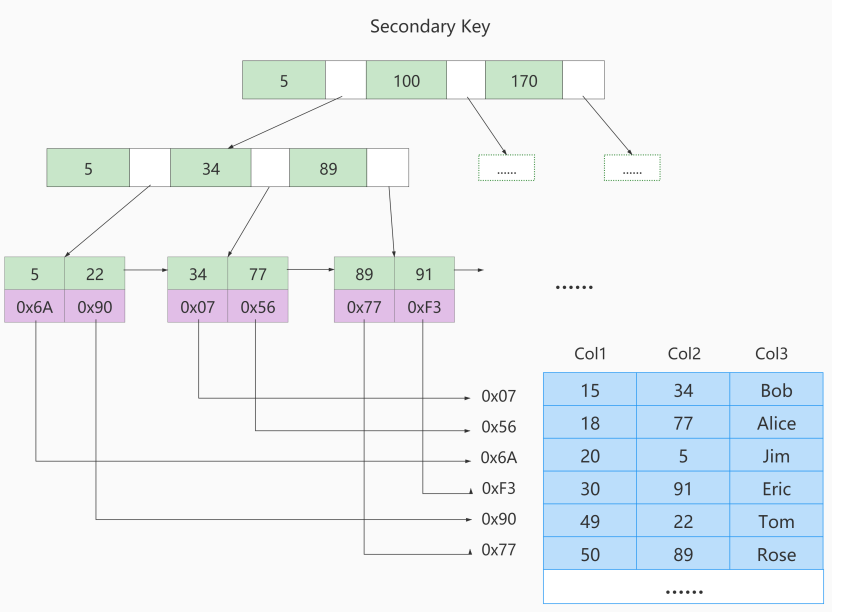
4.2 MyISAM 与 InnoDB对比
MyISAM的索引方式都是“非聚簇”的，与InnoDB包含1个聚簇索引是不同的。小结两种引擎中索引的区别：
① 在InnoDB存储引擎中，我们只需要根据主键值对 聚簇索引 进行一次查找就能找到对应的记录，而在 MyISAM 中却需要进行一次 回表 操作，意味着MyISAM中建立的索引相当于全部都是 二级索引 。
② InnoDB的数据文件本身就是索引文件，而MyISAM索引文件和数据文件是 分离的 ，索引文件仅保存数据记录的地址。
③ InnoDB的非聚簇索引data域存储相应记录 主键的值 ，而MyISAM索引记录的是地址 。换句话说， InnoDB的所有非聚簇索引都引用主键作为data域。
④ MyISAM的回表操作是十分 快速 的，因为是拿着地址偏移量直接到文件中取数据的，反观InnoDB是通 过获取主键之后再去聚簇索引里找记录，虽然说也不慢，但还是比不上直接用地址去访问。
⑤ InnoDB要求表 必须有主键 （ MyISAM可以没有 ）。如果没有显式指定，则MySQL系统会自动选择一个 可以非空且唯一标识数据记录的列作为主键。如果不存在这种列，则MySQL自动为InnoDB表生成一个隐 含字段作为主键，这个字段长度为6个字节，类型为长整型。
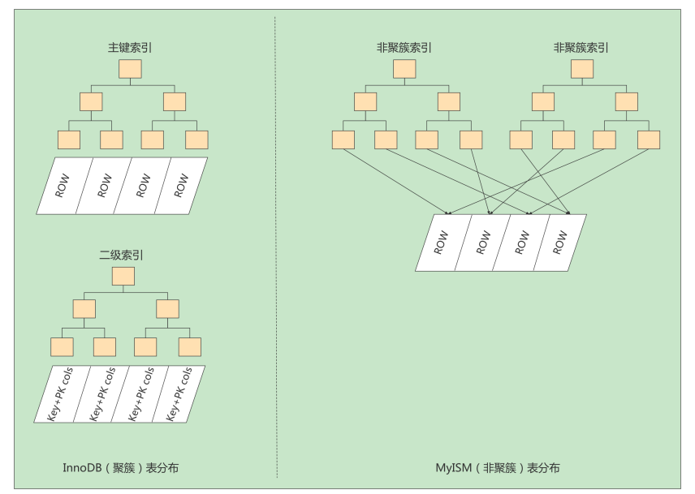
5. 索引的代价
索引是个好东西，可不能乱建，它在空间和时间上都会有消耗：
空间上的代价 每建立一个索引都要为它建立一棵B+树，每一棵B+树的每一个节点都是一个数据页，一个页默认会 占用 16KB 的存储空间，一棵很大的B+树由许多数据页组成，那就是很大的一片存储空间。
时间上的代价
每次对表中的数据进行 增、删、改 操作时，都需要去修改各个B+树索引。而且我们讲过，B+树每 层节点都是按照索引列的值 从小到大的顺序排序 而组成了 双向链表 。不论是叶子节点中的记录，还是内节点中的记录（也就是不论是用户记录还是目录项记录）都是按照索引列的值从小到大的顺序 而形成了一个单向链表。而增、删、改操作可能会对节点和记录的排序造成破坏，所以存储引擎需 要额外的时间进行一些 记录移位 ， 页面分裂 、 页面回收 等操作来维护好节点和记录的排序。如果 我们建了许多索引，每个索引对应的B+树都要进行相关的维护操作，会给性能拖后腿。
6. MySQL数据结构选择的合理性
从MySQL的角度讲，不得不考虑一个现实的问题，就是磁盘IO。如果我们能让索引的数据结构尽量减少磁盘的IO操作，所消耗的时间也就越小。可以说，磁盘的IO操作此数据对索引的使用效率至关重要。
查找都是索引操作，一般来说，索引非常大，尤其是关系型数据库，当数据量比较大的时候，索引的大小有可能几个G甚至更多，为了减少索引在内存中的占用，数据库索引是存储在外部磁盘上的。当我们利用索引查询的时候，不可能把整个索引全部加载到内存，只能逐一加载，那么MySQL衡量查询效率的标准就是IO次数
6.1 全表遍历
这里都懒得说了。
6.2 Hash结构
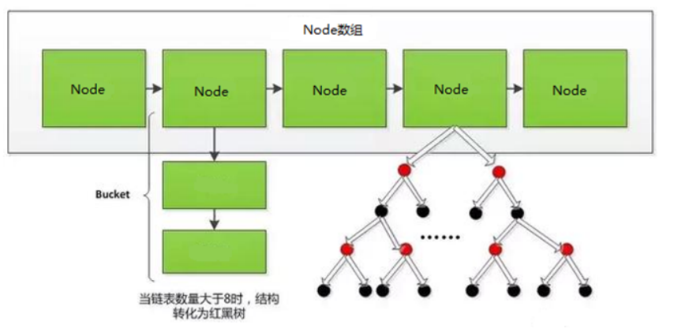
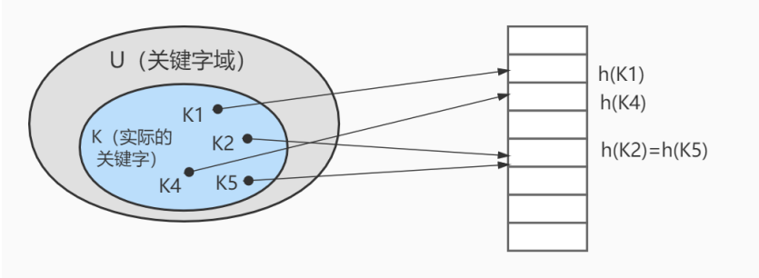
上图中哈希函数h有可能将两个不同的关键字映射到相同的位置，这叫做 碰撞 ，在数据库中一般采用 链 接法 来解决。在链接法中，将散列到同一槽位的元素放在一个链表中，如下图所示
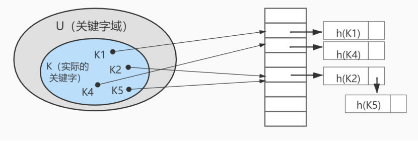
实验：体会数组和hash表的查找方面的效率区别
1
2
3
4
5
6
7
8
9
10
11
12
13
14
15
16
17
18
19
// 算法复杂度为 O(n)
@Test
public void test1(){
int[] arr = new int[100000];
for(int i = 0;i < arr.length;i++){
arr[i] = i + 1;
}
long start = System.currentTimeMillis();
for(int j = 1; j<=100000;j++){
int temp = j;
for(int i = 0;i < arr.length;i++){
if(temp == arr[i]){
break;
}
}
}
long end = System.currentTimeMillis();
System.out.println("time： " + (end - start)); //time： 823
}
1
2
3
4
5
6
7
8
9
10
11
12
13
14
15
//算法复杂度为 O(1)
@Test
public void test2(){
HashSet<Integer> set = new HashSet<>(100000);
for(int i = 0;i < 100000;i++){
set.add(i + 1);
}
long start = System.currentTimeMillis();
for(int j = 1; j<=100000;j++) {
int temp = j;
boolean contains = set.contains(temp);
}
long end = System.currentTimeMillis();
System.out.println("time： " + (end - start)); //time： 5
}
Hash结构效率高，那为什么索引结构要设计成树型呢？
原因1： Hash索引仅能满足=和IN查询。如果进行范围查询，哈希索引的时间复杂度退化为O(n)；而树形的有序特性，依然能够保持O(log2N)的高效率。
原因2：Hash索引还有一个缺陷，数据存储是没有顺序的，在ORDER BY的情况下，使用Hash索引还需要对数据重新排序。
原因3：对于联合索引的情况，Hash值是将联合索引键合并后一起来计算的，无法对单独的一个键或者几个索引键进行查询。
原因4：对于等值查询来说，通常Hash索引的效率更高，不过也存在一种情况，就是索引列的重复值如果很多，效率就会降低。这是因为遇到Hash冲突时，需要遍历桶中的行指针来进行比较，找到查询的关键字，非常耗时。所以，Hash索引通常不会用到重复值多的列上，比如列为性别、年龄的情况等。
Hash索引适用存储引擎如表所示：
| 索引 / 存储引擎 | MyISAM | InnoDB | Memory |
|---|---|---|---|
| HASH索引 | 不支持 | 不支持 | 支持 |
Hash索引的适用性：
Hash所以存在着很多限制，相比之下在数据库中B+树索引的使用面会更广，不过也有一些场景才有Hash索引效率更高，比如在键值（key-value）类型的数据库中，Redis存储的核心就是Hash表
MySQL中的Memory存储引擎支持Hash存储，如果我们需要用到查询的临时表时，就可以选择memory存储引擎，把某个字段设置为Hash索引，比如字符串类型的字段，进行Hash计算之后长度可以缩短到几个字节。当字段的重复度低，而且经常需要进行等值查询的时候，采用Hash索引是个不错的选择。
另外，InnoDB本身不支持Hash索引，但是提供了自适应Hash索引(Adaptive Hash Index)。什么情况下才会使用自适应Hash索引呢？如果某个数据经常被访问，当满足一定条件的时候，就会将这个数据也的地址存放到Hash表中。这样下次查询的时候，就可以直接找到这个页面的所在位置。这样让B+树叶具备了Hash索引的优点。
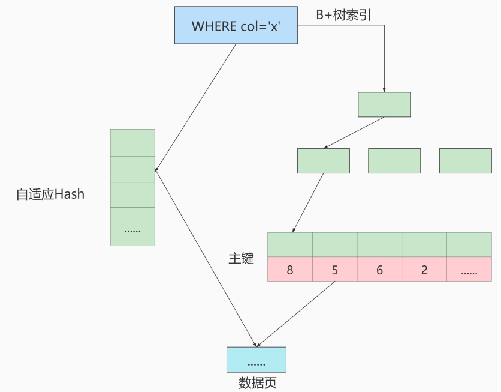
采用自适应 Hash 索引目的是方便根据 SQL 的查询条件加速定位到叶子节点，特别是当 B+ 树比较深的时 候，通过自适应 Hash 索引可以明显提高数据的检索效率。
我们可以通过 innodb_adaptive_hash_index 变量来查看是否开启了自适应 Hash，比如：
mysql> show variables like '%adaptive_hash_index';
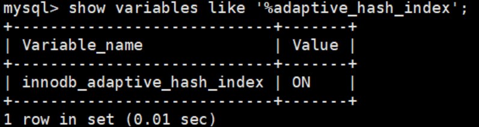
6.3 二叉搜索树
如果我们利用二叉树作为索引结构，那么磁盘的IO次数和索引树的高度是相关的。
1. 二叉搜索树的特点
2. 查找规则
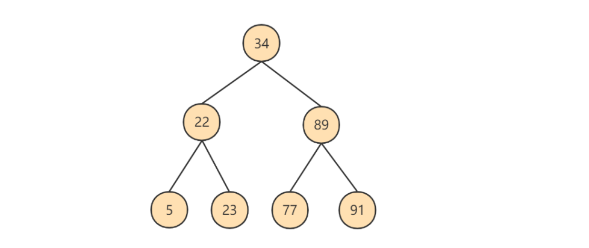
创造出来的二分搜索树如下图所示：
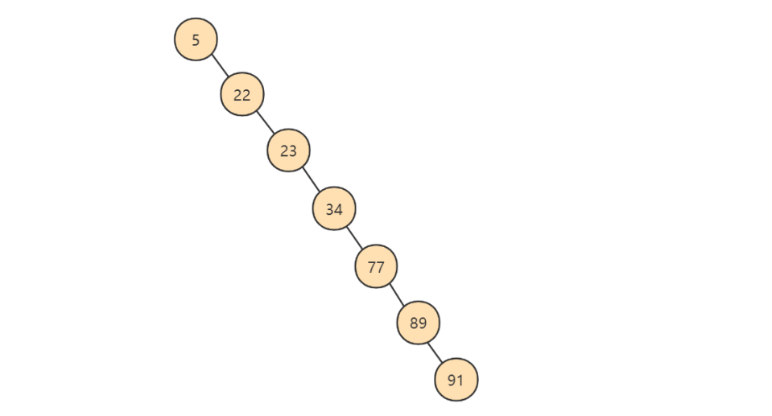
为了提高查询效率，就需要 减少磁盘IO数 。为了减少磁盘IO的次数，就需要尽量 降低树的高度 ，需要把 原来“瘦高”的树结构变的“矮胖”，树的每层的分叉越多越好
6.4 AVL树
平衡二叉树是基于二分法的策略提高数据的查找速度的二叉树的数据结构。
平衡二叉树是采用二分法思维把数据按规则组装成一个树形结构的数据，用这个树形结构的数据减少无关数据的检索，大大的提升了数据检索的速度；平衡二叉树的数据结构组装过程有以下规则：
（1）非叶子节点只能允许最多两个子节点存在。
（2）每一个非叶子节点数据分布规则为左边的子节点小当前节点的值，右边的子节点大于当前节点的值(这里值是基于自己的算法规则而定的，比如hash值)；【左边放小数，右边放大数】
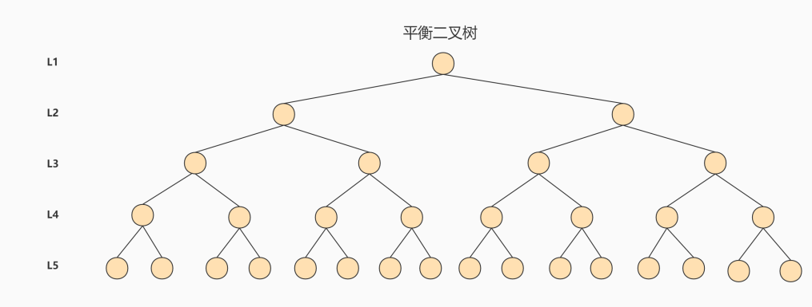
针对同样的数据，如果我们把二叉树改成 M 叉树 （M>2）呢？当 M=3 时，同样的 31 个节点可以由下面 的三叉树来进行存储：
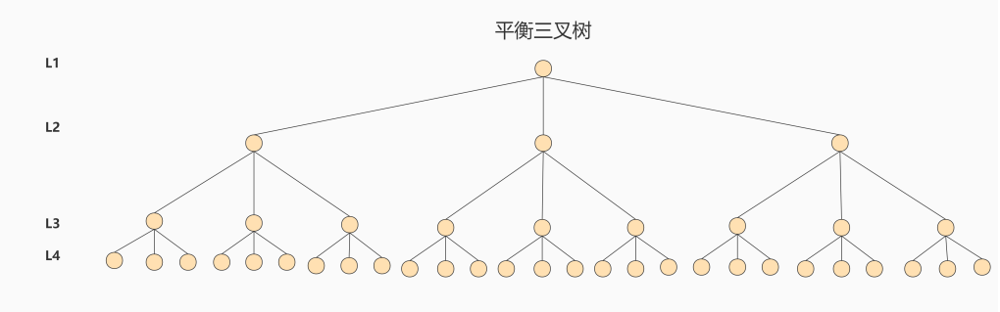
6.5 B-Tree
B树和平衡二叉树稍有不同的是B树属于多叉树又名平衡多路查找树（查找路径不只两个）
B 树的结构如下图所示：
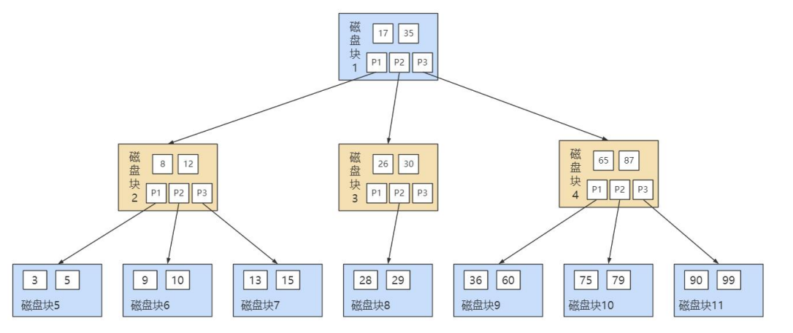
一个 M 阶的 B 树（M>2）有以下的特性：
1.根节点的儿子数的范围是 [2,M]。
2.每个中间节点包含 k-1 个关键字和 k 个孩子，孩子的数量 = 关键字的数量 +1，k 的取值范围为 [ceil(M/2), M]。
3.叶子节点包括 k-1 个关键字（叶子节点没有孩子），k 的取值范围为 [ceil(M/2), M]。
4.假设中间节点节点的关键字为：Key[1], Key[2], …, Key[k-1]，且关键字按照升序排序，即 Key[i]<Key[i+1]。此时 k-1 个关键字相当于划分了 k 个范围，也就是对应着 k 个指针，即为：P[1], P[2], …, P[k]，其中 P[1] 指向关键字小于 Key[1] 的子树，P[i] 指向关键字属于 (Key[i-1], Key[i]) 的子树，P[k] 指向关键字大于 Key[k-1] 的子树。 5. 所有叶子节点位于同一层。
5.所有叶子节点位于同一层。
上面那张图所表示的 B 树就是一棵 3 阶的 B 树。我们可以看下磁盘块 2，里面的关键字为（8，12），它 有 3 个孩子 (3，5)，(9，10) 和 (13，15)，你能看到 (3，5) 小于 8，(9，10) 在 8 和 12 之间，而 (13，15) 大于 12，刚好符合刚才我们给出的特征。
然后我们来看下如何用 B 树进行查找。假设我们想要 查找的关键字是 9 ，那么步骤可以分为以下几步：
1.我们与根节点的关键字 (17，35）进行比较，9 小于 17 那么得到指针 P1；
2.按照指针 P1 找到磁盘块 2，关键字为（8，12），因为 9 在 8 和 12 之间，所以我们得到指针 P2；
3.按照指针 P2 找到磁盘块 6，关键字为（9，10），然后我们找到了关键字 9。
你能看出来在 B 树的搜索过程中，我们比较的次数并不少，但如果把数据读取出来然后在内存中进行比 较，这个时间就是可以忽略不计的。而读取磁盘块本身需要进行 I/O 操作，消耗的时间比在内存中进行 比较所需要的时间要多，是数据查找用时的重要因素。 B 树相比于平衡二叉树来说磁盘 I/O 操作要少 ， 在数据查询中比平衡二叉树效率要高。所以 只要树的高度足够低，IO次数足够少，就可以提高查询性能。
再举例1：
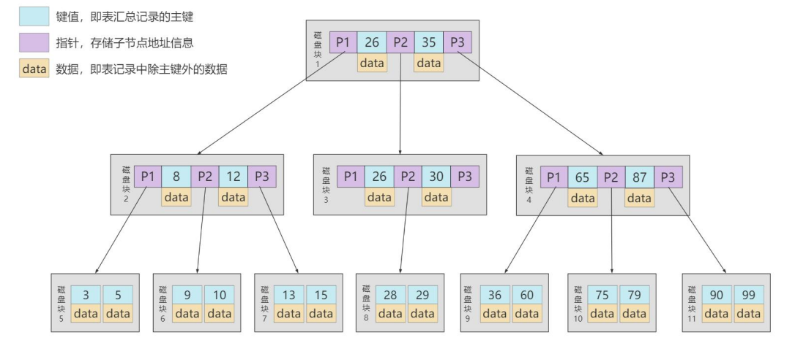
节点插入
定义一个5阶树（平衡5路查找树;），现在我们要把3、8、31、11、23、29、50、28 这些数字构建出一个5阶树出来;
遵循规则：
（1）节点拆分规则：当前是要组成一个5路查找树，那么此时m=5,关键字数必须<=5-1（这里关键字数>4就要进行节点拆分）；
（2）排序规则：满足节点本身比左边节点大，比右边节点小的排序规则;
先插入 3、8、31、11

再插入23、29

再插入50、28

节点删除
1）节点合并规则：当前是要组成一个5路查找树，那么此时m=5,关键字数必须大于等于ceil（5/2）（这里关键字数<2就要进行节点合并）；
（2）满足节点本身比左边节点大，比右边节点小的排序规则;
（3）关键字数小于二时先从子节点取，子节点没有符合条件时就向向父节点取，取中间值往父节点放；

B树相对于平衡二叉树的不同是，每个节点包含的关键字增多了，特别是在B树应用到数据库中的时候，数据库充分利用了磁盘块的原理（磁盘数据存储是采用块的形式存储的，每个块的大小为4K，每次IO进行数据读取时，同一个磁盘块的数据可以一次性读取出来）把节点大小限制和充分使用在磁盘快大小范围；把树的节点关键字增多后树的层级比原来的二叉树少了，减少数据查找的次数和复杂度;
6.6 B+Tree
MySQL官网说明：
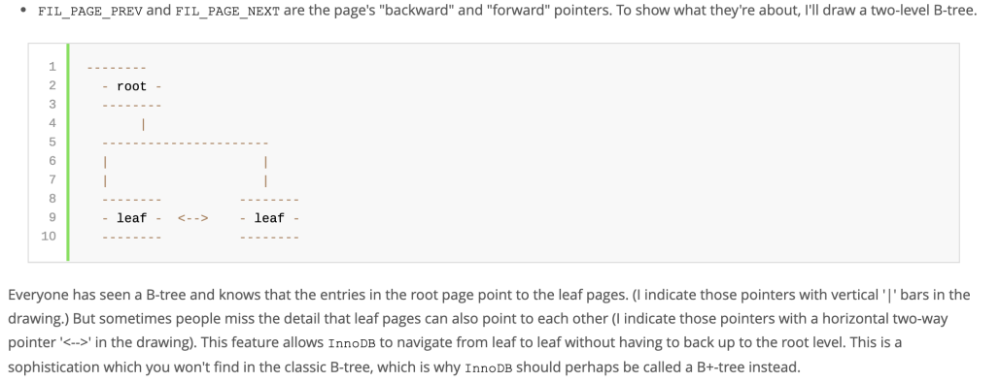
B+ 树和 B 树的差异：
1.有 k 个孩子的节点就有 k 个关键字。也就是孩子数量 = 关键字数，而 B 树中，孩子数量 = 关键字数 +1。
2.非叶子节点的关键字也会同时存在在子节点中，并且是在子节点中所有关键字的最大（或最 小）。
3.非叶子节点仅用于索引，不保存数据记录，跟记录有关的信息都放在叶子节点中。而 B 树中， 非 叶子节点既保存索引，也保存数据记录 。
4.所有关键字都在叶子节点出现，叶子节点构成一个有序链表，而且叶子节点本身按照关键字的大 小从小到大顺序链接。
B 树和 B+ 树都可以作为索引的数据结构，在 MySQL 中采用的是 B+ 树。 但B树和B+树各有自己的应用场景，不能说B+树完全比B树好，反之亦然。
1.概念
B+树是B树的一个升级版，相对于B树来说B+树更充分的利用了节点的空间，让查询速度更加稳定，其速度完全接近于二分法查找。为什么说B+树查找的效率要比B树更高、更稳定；我们先看看两者的区别
2.规则
（1）B+跟B树不同，B+树的非叶子节点不保存关键字记录的指针，只进行数据索引，这样使得B+树每个非叶子节点所能保存的关键字大大增加；
（2）B+树叶子节点保存了父节点的所有关键字记录的指针，所有数据地址必须要到叶子节点才能获取到。所以每次数据查询的次数都一样；
（3）B+树叶子节点的关键字从小到大有序排列，左边结尾数据都会保存右边节点开始数据的指针。
（4）非叶子节点的子节点数=关键字数（来源百度百科）（根据各种资料 这里有两种算法的实现方式，另一种为非叶节点的关键字数=子节点数-1（来源维基百科)，虽然他们数据排列结构不一样，但其原理还是一样的Mysql 的B+树是用第一种方式实现）;


3.特点
1、B+树的层级更少：相较于B树，B+每个非叶子节点存储的关键字数更多，树的层级更少所以查询数据更快；
2、B+树查询速度更稳定：B+所有关键字数据地址都存在叶子节点上，所以每次查找的次数都相同所以查询速度要比B树更稳定;
3、B+树天然具备排序功能：B+树所有的叶子节点数据构成了一个有序链表，在查询大小区间的数据时候更方便，数据紧密性很高，缓存的命中率也会比B树高。
4、B+树全节点遍历更快：B+树遍历整棵树只需要遍历所有的叶子节点即可，而不需要像B树一样需要对每一层进行遍历，这有利于数据库做全表扫描。
B树相对于B+树的优点是，如果经常访问的数据离根节点很近，而B树的非叶子节点本身存有关键字和其数据的地址，所以这种数据检索的时候会要比B+树快。
6.7 R树
R-Tree在MySQL很少使用，仅支持 geometry数据类型 ，支持该类型的存储引擎只有myisam、bdb、 innodb、ndb、archive几种。举个R树在现实领域中能够解决的例子：查找20英里以内所有的餐厅。如果 没有R树你会怎么解决？一般情况下我们会把餐厅的坐标(x,y)分为两个字段存放在数据库中，一个字段记 录经度，另一个字段记录纬度。这样的话我们就需要遍历所有的餐厅获取其位置信息，然后计算是否满 足要求。如果一个地区有100家餐厅的话，我们就要进行100次位置计算操作了，如果应用到谷歌、百度 地图这种超大数据库中，这种方法便必定不可行了。R树就很好的 解决了这种高维空间搜索问题 。它把B 树的思想很好的扩展到了多维空间，采用了B树分割空间的思想，并在添加、删除操作时采用合并、分解 结点的方法，保证树的平衡性。因此，R树就是一棵用来 存储高维数据的平衡树 。相对于B-Tree，R-Tree 的优势在于范围查找。
| 索引 / 存储引擎 | MyISAM | InnoDB | Memory |
|---|---|---|---|
| R-Tree索引 | 支持 | 支持 | 不支持 |
附录：算法的时间复杂度
同一问题可用不同算法解决，而一个算法的质量优劣将影响到算法乃至程序的效率。算法分析的目的在 于选择合适算法和改进算法
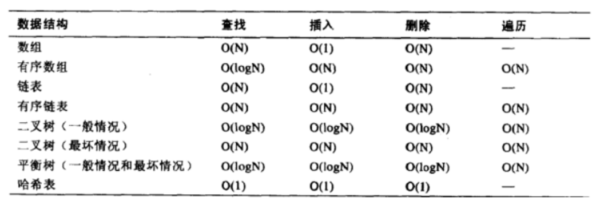